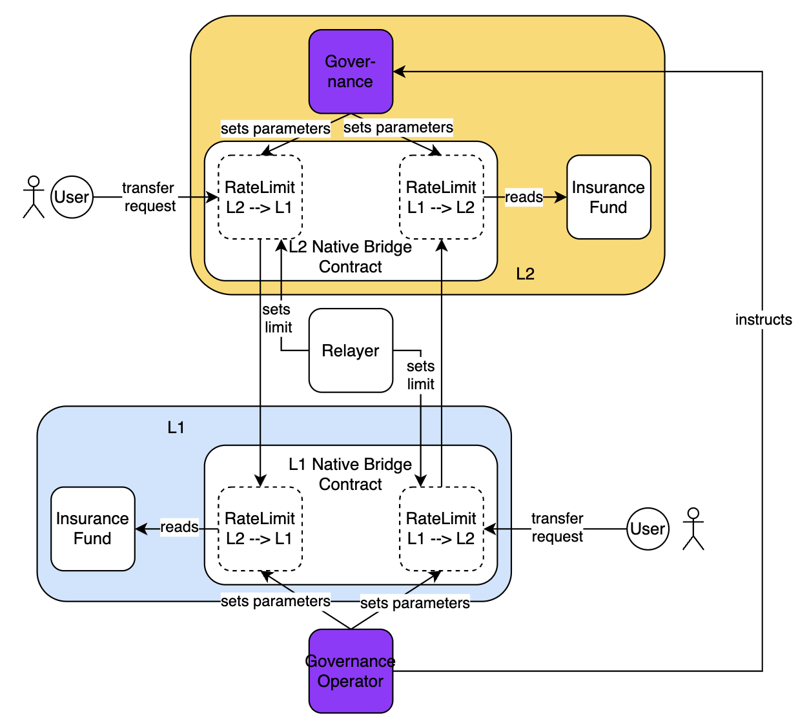

MIP-74: Rate limiter for the Lock/Mint-type Native Bridge
- Description: A rate limitation mechanism for the Lock/Mint-type Native Bridge.
- Authors: Andreas Penzkofer
- Desiderata: MD-74
Abstract
We propose a rate limitation mechanism to protect the Lock/Mint-type Native Bridge, hereafter called the Native Bridge, see MIP-58, against faulty or compromised behavior of the bridge components. It limits the volume of assets that can be transferred within a time window. This MIP proposes a solution to mitigate attacks and limit damages, and if paired with an insurance fund it may cover the potential losses incurred by our users.
Motivation
There are several components and actors in control of the behavior of the Native Bridge including contracts (we may assume they are trusted), our Relayer and of course the network. If an attacker can control one these components they can potentially mint and transfer assets thereby compromising the bridge.
T Rate Limiter can help to protect the Native Bridge against faulty components (Relayer or network) or attacks. It can limit the volume of transferred value per time interval, the maximum value transferred with a given transfer, or the number of transactions within a time window.
Specification
The key words “MUST”, “MUST NOT”, “REQUIRED”, “SHALL”, “SHALL NOT”, “SHOULD”, “SHOULD NOT”, “RECOMMENDED”, “NOT RECOMMENDED”, “MAY”, and “OPTIONAL” in this document are to be interpreted as described in RFC 2119 and RFC 8174.
Actors and components
The Native Bridge is operated via contracts, key holders and a relayer. The following actors and components are involved:
- User: this is the entity that interacts with the Native Bridge. The user can be a contract or an external account.
- L1 Native Bridge contract: this is the contract that is deployed on the L1 chain. It is responsible for locking and releasing (unlocking) assets on the L1 chain.
- L2 Native Bridge contract: this is the contract that is deployed on the L2 chain. It is responsible for minting and burning assets on the L2 chain.
- Governance contract: this is an L2 contract on L2 that is used to adjust the parameters of the Native Bridge components on L2.
- Governance Operator: this is the entity that can adjust the parameters of the Native Bridge via the governance contract or directly.
In addition to protect the Native Bridge against faulty components, the Rate Limiter and the Insurance Fund are introduced. Figure 1 shows the architecture of the Native Bridge including the following components:
- Insurance Fund: The Insurance Fund is a contract that is used to cover potential losses in case of a faulty component, see MIP-50.
- Rate Limiter: The Rate Limiter is a set of contracts (one on the L1 and one on the L2) that is used to limit the volume of transferred value per time window.
 Figure 1: Architecture of the Rate Limitation
Actors, components and trust assumptions
We assume the following trust assumptions:
- The governance contract is implemented correctly.
- The Bridge contract and the L2 Native Bridge contract are implemented correctly.
- The Governance Operator is trusted. For example it COULD be a multisig human.
- The Relayer is a trusted software component.
Risks and mitigation strategies
The following risks are associated with the Native Bridge:
- The trusted Relayer is compromised or faulty. We thus want to ensure that the Relayer has not unlimited power to release or mint assets. For this we MUST implement the Rate Limiter on the target chain.
- In order to rate limit the bridge (e.g. stop the bridge transfers entirely) there should be a higher instance than the Relayer in setting rate limits. Thus the rate limit on the target chain SHOULD be set by the Governance Operator.
- If the target chain is rate limited but the source chain is not, users could request for more transfers on the source chain than the Relayer could complete on the target chain. This could lead to a situation where the Relayer is not able to process all transactions. To mitigate this the Relayer or the Governance Operator MUST rate limit the source chain as well.
- The Relayer may go down, while the number of transactions and requested transfer value across the bridge still increases on the source chain. Due to the rate limit on the target chain the Relayer may struggle or be incapable to process all initiated transfers. Thus the Relayer or the Governance Operator MUST be able to rate limit the source chain temporarily or permanently lower than the target chain rate limit.
To elaborate on the last point, consider that the Native Bridge operates at the maximum rate continuously and both source and target chain have the same rate limit. Then, if the Relayer goes down for some time Delta, the Relayer will start to process transactions at the maximum rate. Consequently, all transactions would be delayed for Delta time units as long as the rate limit on the target chain is entirely exhausted.
Objectives
The objectives of the Rate Limiter are to guarantee the following properties:
- the value of assets being transferred across the Native Bridge, within a configurable time window $\Delta$, MUST always be less than the insurance funds.
- the Governance Operator MUST be able to adjust the rate limit on the source and target chain.
- the Relayer MUST be able to catch up with the transfers in case it has been down for some time.
- the Relayer MAY adjust the rate limit on the source chain.
The guiding principles of the design of the Rate Limiter are:
- the Governance Operator monitors the Native Bridge, and in case of an attack or fault, it SHOULD take at most $\Delta$ time units to detect the issue and pause the bridge.
- we want to make sure that the total amount that is transferred within $\Delta$ time units (and that could potentially result from malicious behaviors) is ALWAYS covered by the insurance fund.
Rate Limiter
The Rate Limiter limits the volume of assets that can be transferred within a time window. The Rate Limiter MUST be implemented as part of the L1 Native Bridge contract and the L2 Native Bridge contract.
Insurance funds
We assume there is a Insurance Fund on both L1 and L2, with values insurance_fund_L1 and insurance_fund_L2, respectively.
[!NOTE] These values are considered constant in the sequel. There may be updated if needed or if new funds are added to the pools.
The Insurance Fund rate-limits the transfers i.e., for a given transfer from source chain to target chain the Insurance Fund on the target chain is responsible for the rate limit, and thus we will refer to the insurance_fund_target.
For a transfer from L1 (L2) to L2 (L1) the insurance_fund_target = insurance_fund_L2 (insurance_fund_L1) is responsible for the rate limit.
Rate limit on the target chain
The rate limit is dependent on the fund size in the Insurance Fund. In particular the maximum rate limit is defined by
max_rate_limit_target = insurance_fund_target / reaction_time,
where the reaction_time is the time it takes for the Governance Operator to react to a faulty or compromised component. The reaction_time is a parameter that is set by the Governance Operator. The Governance Operator MAY set the actual rate limit lower than the max_rate_limit_target. However the Rate Limiter MUST NOT set the rate limit higher than the max_rate_limit_target.
The rate limit MAY also be adjusted by the Governance Operator.
rate_limit_target = rate_reduction_target * max_rate_limit_target,
where rate_reduction_target $\in$ [0,1] is a parameter that is set by the Governance Operator. Note the rate_limit_target MUST not be larger than max_rate_limit_target.
The following are possible ways to adjust the rate limit:
- The Governance Operator can adjust the rate limit by adding or removing funds from the Insurance Fund.
- The Governance Operator may adjust the rate limit by changing the
reaction_time. - The Governance Operator may adjust the rate limit by changing the
rate_reduction_target.
Rate limit on the source chain
On the source chain the rate limit MAY be lowered by the Relayer. This is to ensure that the rate limit on the target chain is not exceeded. It also permits the Relayer to catch up in case of the Relayer has been down for some time.
rate_limit_source = min{rate_reduction_source * rate_limit_target, rate_limit_operator_source},
where rate_reduction_source $\in$ [0,1] is a parameter that is set by the Relayer. rate_limit_operator_source is a parameter that is set by the Governance Operator. Note the rate_limit_source SHOULD not be larger than rate_limit_operator_source.
Rate limitation adjustment algorithm
The rate limitation works as follows:
[!NOTE] I can convert the following into pseudo code, after we have discussed the algorithm and it makes sense.
Algorithm for the Native Bridge contract on the source chain
- A user wants to transfer value from source to target chain.
- The user sends a transaction to the source chain Native Bridge contract.
- The source chain Native Bridge contract checks if the rate limit
rate_limit_sourceis exceeded if it would apply the transaction.- If the rate limit is exceeded the transaction is rejected.
- Else the transaction is accepted.
Algorithm for the Native Bridge contract on the target chain
- The target chain Native Bridge contract checks if the rate limit
rate_limit_targetis exceeded if it would apply the transaction.- If the rate limit is exceeded the transaction is rejected.
- If the rate limit is not exceeded the transaction is accepted.
The following algorithm is a recommendation for the operation of the Relayer:
(Optional) Algorithm for the Relayer
- The Relayer receives an event that a transaction was accepted.
- The Relayer checks if the rate limit
rate_limit_targetis exceeded if it would apply the transaction. (The Relayer may keep locally the budget on the target chain, or it could read the contract state).- If the rate limit is exceeded the transaction has to be put on hold.
- Else the Relayer sends a transfer transaction to the target chain.
Reference Implementation
Verification
Needs discussion.
We may add a formal model?
Changelog
Appendix
Copyright
Copyright and related rights waived via CC0.